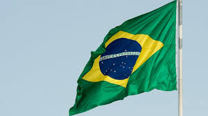

O polo aquático chegou ao Brasil no início do século 20, praticado nas cidades de São Paulo e Rio
de Janeiro. O registro do primeiro jogo no país é datado em 1908, na praia Santa Luzia, no Rio de Janeiro. Já o
primeiro jogo internacional ocorreu na Baía de Guanabara, em 1919, contra a Argentina. A estreia da seleção
brasileira de polo aquático foi em 1920 contra a Antuérpia, na Bélgica, com a conquista da sétima colocação. Nos
Jogos Pan-Americanos, o Brasil tem um bom histórico, somando 11 medalhas, sendo uma de ouro, em São Paulo em 1963.

Felipe Perrone Rocha nasceu no Rio de Janeiro, no dia 27 de fevereiro de 1986. É um jogador
hispano-brasileiro de pólo aquático. Ele competiu pela Espanha de 2003 a 2013, inclusive nos Jogos Olímpicos de
Verão de 2008 e nos Jogos Olímpicos de Verão de 2012. Depois disso, ele competiu por seu país natal nos Jogos
Olímpicos de 2016, quando o Brasil conquistou sua primeira vaga nas eliminatórias em 32 anos como anfitrião. Ele
ajudou o clube espanhol de pólo aquático CN Atlètic-Barceloneta a vencer a LEN Champions League na temporada
2013-14. Seu irmão Ricardo Perrone também competiu pela Espanha no polo aquático.